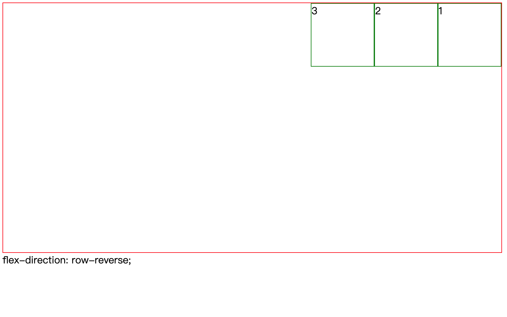
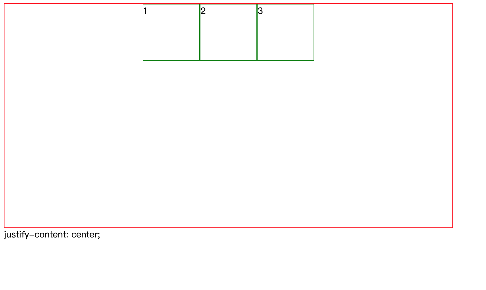

POSTS
CSS之flex布局
什么是 flex 布局？
flex 是 Flexible Box 的缩写，意为”弹性布局”，是 CSS 布局的方式之一，flex 布局已经支持大多数浏览器
flex 布局的结构
Flex 布局由容器 container 和容器内的元素 items 构成

如何使用 flex 布局？
使用 flex 布局比较简单，只需要在 CSS 中声明容器是 flex 容器就可以使用 flex 布局
<div class="container"></div>
.container{
display:flex/inline-flex;
}
容器的样式
items 的流动方式(主轴方向):
.container{ flex-direction:row/row-reverse/column/column-reverse }



一个小 bug: 当 items 过多的时候不会另起一行，而是会挤压，items 会变小
items 换行:
.container{ flex-wrap:nowrap/wrap/wrap-reverse; }nowrap 是默认值，不换行
主轴对齐方式:
.container{ justify-content:flex-start/flex-end/center/space-between/space-around/space-evenly; }

默认主轴是横轴
次轴对齐:
.container{ align-items:flex-start/flex-end/center/stretch; }


默认次轴是纵轴
多行内容(不常用):
.container{ align-content:flex-start/flex-end/center/stretch/space-between/space-around; }
容器内元素(items)样式
order 属性:
用于改变 items 的显示顺序，以 order 值从小到大的排序，默认值是 0;
<div class="container"> <div class="items">1</div> <div class="items">2</div> <div class="items">3</div> </div>.container { border: 1px solid red; width: 800px; height: 400px; display: flex; } .items:first-child { width: 100px; height: 200px; order: 100; border: 1px solid #000; } .items:nth-child(2) { width: 100px; height: 200px; order: 2; border: 1px solid #000; } .items:nth-child(3) { width: 100px; height: 200px; order: 30; border: 1px solid #000; }
flex-grow 属性:
按属性值的比例分配剩余空间，0 为不分配
<div class="container"> <div class="items">1</div> <div class="items">2</div> <div class="items">3</div> </div>.container { border: 1px solid red; width: 800px; height: 400px; display: flex; } .items:first-child { flex-grow: 1; height: 50%; border: 1px solid black; } .items:nth-child(2) { flex-grow: 2; height: 50%; border: 1px solid black; } .items:nth-child(3) { flex-grow: 0; height: 50%; border: 1px solid black; }flex-shrink 属性:
在视窗大小不足时，控制收缩的速率，0 为不收缩
align-self 属性:
对单个 item 进行 align-items 的调整
常用的 flex 代码
display:flex;
flex-direction:row/column;
flex-wrap:wrap;
justify-content:center/space-between;
align-center:center;